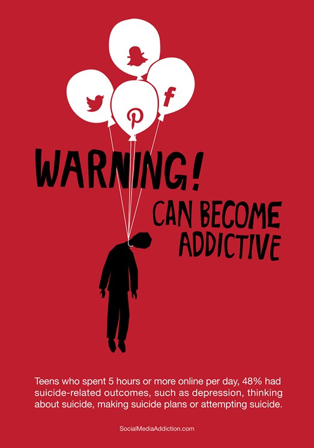

Формування кольорових рішень для соціальної реклами базується на важливості впливу візуальних елементів на емоційну та когнітивну реакцію цільової аудиторії. Колір в рекламі має потужний психологічний вплив, викликаючи різні емоції та ставлячи конкретні асоціації.
Соціальна реклама спрямована на підвищення усвідомленості громадськості про соціальні проблеми, та викликання змін у поведінці чи уявленнях. Використання правильної колірної палітри може підсилити інформаційний вплив реклами.
Методика формування кольорових рішень для соціальної реклами передбачає врахування психологічних реакцій на різні кольори та їх комбінації. Наприклад, червоний може викликати емоції тривоги чи невдоволення, зелений – асоціюється з природою та екологією, а синій – з спокоєм і довірою.
Врахування особливостей цільової аудиторії, психологічних особливостей сприйняття кольорів в різних культурах, а також вивчення сучасних тенденцій у дизайні допомагають створювати ефективні соціальні рекламні кампанії, які привертають увагу та викликають бажану реакцію в глядачів.
На даний проект покладено, досить відповідальну мету, визначення кольорових рішень, які притаманні для різних типів соціальної реклами, будь-то захист навколишнього середовища, захист тварин чи проти насилля.
Автор проекту - магістр ХНЕУ ім. С. Кузнеця, спец. 186 Видавництво та поліграфія, ОПП «Технології електронних мультимедійних видань» Віталій Андрющенко.
Свої зауваження можна надсилати на v8204300@gmail.com